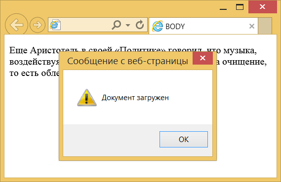

Элемент <body>
| Internet Explorer | Chrome | Opera | Safari | Firefox |
| 1 | 1 | 1 | 1 | 1 |
| Android | Firefox Mobile | Opera Mobile | Safari Mobile |
| 1 | 1 | 6 | 1 |
Элемент <body> предназначен для хранения содержания веб-страницы (контента), отображаемого в окне браузера. Информацию, которую следует выводить в документе, следует располагать именно внутри контейнера <body>. К такой информации относится текст, изображения, теги, скрипты JavaScript и т. д.
<body> также применяется для определения цветов ссылок и текста на веб-странице. Подобная практика в HTML осуждается и взамен для указания цветовой схемы рекомендуется использовать стили, применяя их к селектору body.
Часто <body> используется для размещения обработчика событий, например, onload, которое выполняется после того, как документ завершил загрузку в текущее окно или фрейм.
Открывающий и закрывающий теги <body> на веб-странице не являются обязательными, однако хорошим стилем считается их использование, чтобы определить начало и конец HTML-документа.
Синтаксис
<body>
...
</body>Закрывающий тег
Аттрибуты
- alink
- Устанавливает цвет активной ссылки.
- background
- Задает фоновый рисунок на веб-странице.
- bgcolor
- Цвет фона веб-страницы.
- bgproperties
- Определяет, прокручивать фон совместно с текстом или нет.
- bottommargin
- Отступ от нижнего края окна браузера до контента.
- leftmargin
- Отступ по горизонтали от левого края окна браузера до контента.
- link
- Цвет ссылок на веб-странице.
- rightmargin
- Отступ от правого края окна браузера до контента.
- scroll
- Устанавливает, отображать полосы прокрутки или нет.
- text
- Цвет текста в документе.
- topmargin
- Отступ от верхнего края окна браузера до контента.
- vlink
- Цвет посещённых ссылок.
Также для этого элемента доступны универсальные атрибуты и события.
Пример
<!DOCTYPE HTML>
<html>
<head>
<title>BODY</title>
<meta charset="utf-8">
</head>
<body onload="alert('Документ загружен')">
<p>Еще Аристотель в своей «Политике» говорил,
что музыка, воздействуя на человека, доставляет
«своего рода очищение, то есть облегчение,
связанное с наслаждением».</p>
</body>
</html>Результат текущего примера показан на рис. 1. При использовании события onload элемента <body> выполняется скрипт, написанный на языке JavaScript, в данном случае он выводит сообщение, что документ загружен.

Рис. 1. Всплывающее окно в документе
Спецификация ?
| Спецификация | Статус |
|---|---|
| WHATWG HTML Living Standard | Живой стандарт |
| HTML5 | Рекомендация |
| HTML 4.01 Specification | Рекомендация |
Спецификация
Каждая спецификация проходит несколько стадий одобрения.
- Recommendation (Рекомендация) — спецификация одобрена W3C и рекомендована как стандарт.
- Candidate Recommendation (Возможная рекомендация) — группа, отвечающая за стандарт, удовлетворена, как он соответствует своим целям, но требуется помощь сообщества разработчиков по реализации стандарта.
- Proposed Recommendation (Предлагаемая рекомендация) — на этом этапе документ представлен на рассмотрение Консультативного совета W3C для окончательного утверждения.
- Working Draft (Рабочий проект) — более зрелая версия черновика после обсуждения и внесения поправок для рассмотрения сообществом.
- Editorʼs draft (Редакторский черновик) — черновая версия стандарта после внесения правок редакторами проекта.
- Draft (Черновик спецификации) — первая черновая версия стандарта.
Особняком стоит живой стандарт HTML (Living) — он не придерживается традиционной нумерации версий, поскольку находится в постоянной разработке и обновляется регулярно.